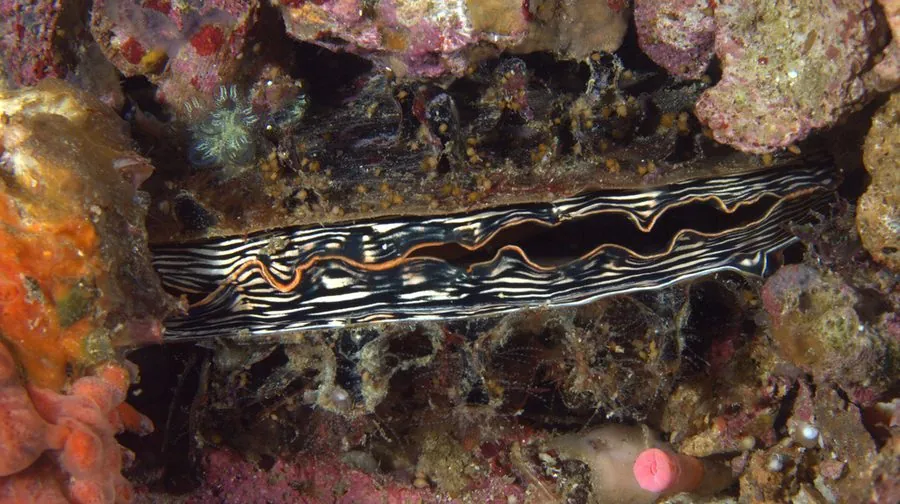

软体动物 · 动物界
栉江珧 Atrina pectinata

贝壳像牛角或折扇一样插入泥沙中的大型双壳类，闭壳肌发达，干制后就是有名的“江珧柱”，是名贵海味。
- 分类
- 门软体动物门纲双壳纲目珍珠贝目科江珧科属江珧属
- 栖息环境
- 潮间带下区和浅海沙泥底质，把壳的尖端插入泥沙中生活
- 地理分布
- 印度洋—西太平洋沿岸，中国黄海、东海和南海均有分布
- 保护级别
- 暂无评估；中国未列入国家重点保护野生动物名录
物种志
栉江珧的贝壳大型、薄而脆，呈三角形或扇形，壳顶尖，两壳相合时像一把刀或牛角。壳面黑褐或紫褐色，有放射状的肋纹，壳长可达 20–30 cm，是体型较大的双壳类。
栉江珧分布于印度洋—西太平洋的潮间带下区和浅海沙泥底质，中国黄海、东海和南海均有。它把壳的尖端插入泥沙中，只露出后端，靠足丝和贝壳固定在沙中生活，因此很难被拖出来。它是滤食性动物，靠鳃过滤浮游生物和有机颗粒。繁殖期在夏季，雌雄异体，体外受精，幼体浮游后附着变态。栉江珧的闭壳肌特别发达，干制后就是“江珧柱”，即干贝的一种，是名贵的海味；新鲜的闭壳肌也可鲜食。由于过度采捕和栖息地破坏，其野生资源有所下降，如今市场上部分产品来自养殖。目前它没有IUCN 的正式评估，中国未将其列入国家重点保护野生动物名录。
形态与习性
- 食性滤食浮游生物和有机颗粒
- 壳长可达 20–30 cm
- 栖息方式壳的尖端插入泥沙，只露出后端
- 闭壳肌特别发达，干制后即“江珧柱”，是名贵海味
- 繁殖夏季繁殖，雌雄异体，体外受精
- 经济价值肉质和闭壳肌均可食用，部分产品来自养殖
趣味知识
- 栉江珧把壳的尖端插进泥沙，只露出后端生活。
- 它的闭壳肌干制后就是“江珧柱”，是名贵的海味。
- 江珧的壳薄而脆，形状像一把展开的折扇。